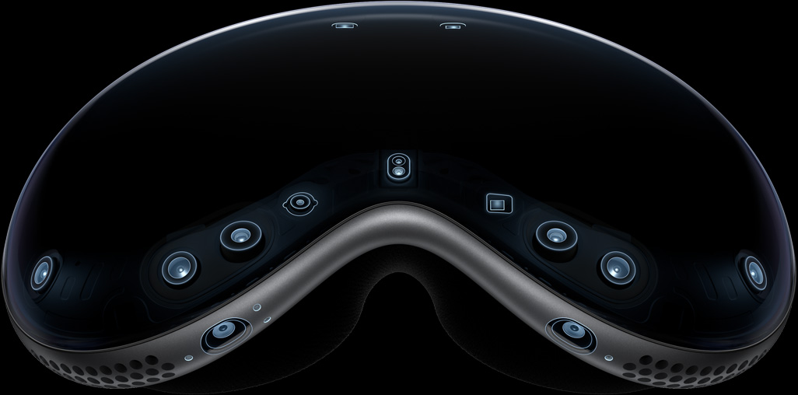
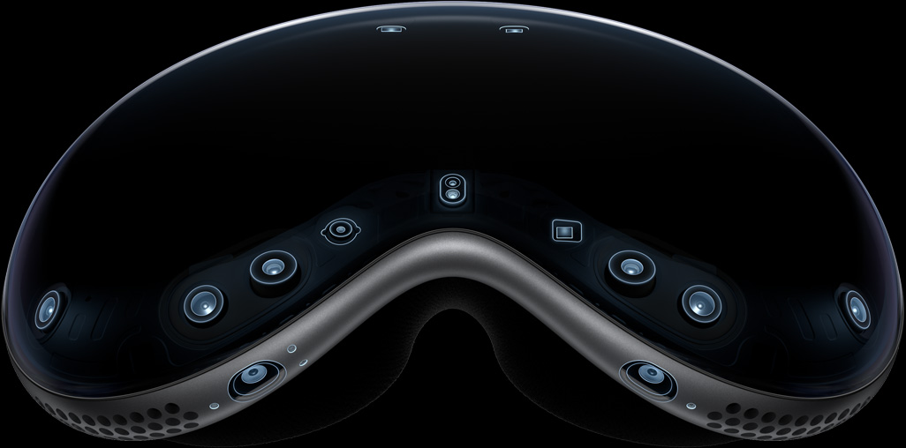

Apple Vision Pro seamlessly blends digital content with your physical space.
So you can work, watch, relive memories, and connect in ways never before possible.
The era of spatial computing is here.
Watch the film
Entertainment
The ultimate theater.
Wherever you are.
A new dimension for entertainment.
Apple Vision Pro can transform any room into your own personal theater. Expand your movies, shows, and games to your perfect size and experience them in Spatial Audio. Apple Immersive Video puts you in the center of the action with mind‑blowing immersion. And with more pixels than a 4K TV for each eye, you can enjoy stunning content wherever you are — on a long flight or the couch at home.
Productivity
A workspace with
infinite space.
Discover new ways to work.
Apple Vision Pro gives you limitless space to get things done. Organize everything you need anywhere around you, in any way you like. Seamlessly bring in your Mac workflows using Mac Virtual Display. Connect a Magic Keyboard, a Magic Trackpad, and other Bluetooth accessories to expand how you navigate. And with SharePlay in FaceTime, you can collaborate with colleagues using apps together in real time.
Productivity
A workspace with
infinite space.
Discover new ways to work.
Apple Vision Pro gives you limitless space to get things done. Organize everything you need anywhere around you, in any way you like. Seamlessly bring in your Mac workflows using Mac Virtual Display. Connect a Magic Keyboard, a Magic Trackpad, and other Bluetooth accessories to expand how you navigate. And with SharePlay in FaceTime, you can collaborate with colleagues using apps together in real time.
Productivity
A workspace with
infinite space.
Discover new ways to work.
Apple Vision Pro gives you limitless space to get things done. Organize everything you need anywhere around you, in any way you like. Seamlessly bring in your Mac workflows using Mac Virtual Display. Connect a Magic Keyboard, a Magic Trackpad, and other Bluetooth accessories to expand how you navigate. And with SharePlay in FaceTime, you can collaborate with colleagues using apps together in real time.
Productivity
A workspace with
infinite space.
Discover new ways to work.
Apple Vision Pro gives you limitless space to get things done. Organize everything you need anywhere around you, in any way you like. Seamlessly bring in your Mac workflows using Mac Virtual Display. Connect a Magic Keyboard, a Magic Trackpad, and other Bluetooth accessories to expand how you navigate. And with SharePlay in FaceTime, you can collaborate with colleagues using apps together in real time.
Productivity
A workspace with
infinite space.
Discover new ways to work.
Apple Vision Pro gives you limitless space to get things done. Organize everything you need anywhere around you, in any way you like. Seamlessly bring in your Mac workflows using Mac Virtual Display. Connect a Magic Keyboard, a Magic Trackpad, and other Bluetooth accessories to expand how you navigate. And with SharePlay in FaceTime, you can collaborate with colleagues using apps together in real time.
Design
Designed by Apple.
Apple Vision Pro is the result of decades of experience designing high‑performance, mobile, and wearable devices — culminating in the most ambitious product Apple has ever created. Apple Vision Pro integrates incredibly advanced technology into an elegant, compact form, resulting in an amazing experience every time you put it on.
Front. A singular piece of three-dimensionally formed laminated glass flows into an aluminum alloy frame that curves to wrap around your face.
Light Seal. The Light Seal gently flexes to conform to your face, delivering a precise fit while blocking out stray light.
Head bands. The Solo Knit Band provides cushioning, breathability, and stretch, and a Fit Dial lets you adjust Apple Vision Pro precisely to your head. The Dual Loop Band offers an additional option for a personalized fit.
Power. The external battery supports up to 2 hours of general use and up to 2.5 hours of video playback.1
Sound. Speakers positioned close to your ears deliver rich Spatial Audio while keeping you aware of your surroundings.
EyeSight. An outward display reveals your eyes while wearing Apple Vision Pro, letting others know when you are using apps or fully immersed.


A singular piece of three-dimensionally formed laminated glass acts as an optical surface for the cameras and sensors that view the world. It flows seamlessly into a custom aluminum alloy frame that gently curves to wrap around your face while serving as an attachment point for the Light Seal.

Technology
Innovation you can see, hear, and feel.
Pushing boundaries from the inside out. Spatial experiences on Apple Vision Pro are only possible through groundbreaking Apple technology. Displays the size of a postage stamp that deliver more pixels than a 4K TV to each eye. Incredible advances in Spatial Audio. A revolutionary dual‑chip design featuring custom Apple silicon. A sophisticated array of cameras and sensors. All the elements work together to create an unprecedented experience you have to see to believe.
More pixels than a 4K TV. For each eye.
The custom micro‑OLED display system features 23 million pixels, delivering stunning resolution and colors. And a specially designed three‑element lens creates the feeling of a display that’s everywhere you look.
Our most advanced
Spatial Audio system ever.
Dual-driver audio pods positioned next to each ear deliver personalized sound while letting you hear what’s around you. Spatial Audio makes sounds feel like they’re coming from your surroundings. Audio ray tracing analyzes your room’s acoustic properties to adapt and match sound to your space. And if you want to use headphones with Apple Vision Pro, AirPods Pro (2nd generation) with USB‑C offer the perfect experience, featuring Lossless Audio with ultra-low latency enabled by the H2 chip in both devices.
Responsive, precision eye tracking.
A high‑performance eye‑tracking system of LEDs and infrared cameras projects invisible light patterns onto each eye. This advanced system provides ultraprecise input without your needing to hold any controllers, so you can accurately select elements just by looking at them.
 

A sophisticated sensor array.
A pair of high-resolution cameras transmit over one billion pixels per second to the displays so you can see the world around you clearly. The system also helps deliver precise head and hand tracking and real‑time 3D mapping, all while understanding your hand gestures from a wide range of positions.

Revolutionary dual‑chip performance.
A unique dual‑chip design enables the spatial experiences on Apple Vision Pro. The powerful M2 chip simultaneously runs visionOS, executes advanced computer vision algorithms, and delivers stunning graphics, all with incredible efficiency. And the brand-new R1 chip is specifically dedicated to process input from the cameras, sensors, and microphones, streaming images to the displays within 12 milliseconds — for a virtually lag-free, real-time view of the world.
+ Learn more about technologyValues
Designed to make a difference.
Our values lead the way.Apple Vision Pro was designed to help protect your privacy and keep you in control of your data. Its built‑in accessibility features are designed to work the way you do.
+ Learn more about valuesUse AR to view Apple Vision Pro.
Open this page using Safari on your iPhone or ipad.

Explore
Apple Vision Pro
accessories.

An all‑new platform.
An all‑new world for developers.
The possibilities for what developers can dream up and build for Apple Vision Pro are endless. And with familiar tools and frameworks like Xcode, SwiftUI, RealityKit, and ARKit, as well as support for Unity and the 3D-content preparation app Reality Composer Pro, developers have everything they need to create amazing spatial experiences.
Learn more about developing for visionOS